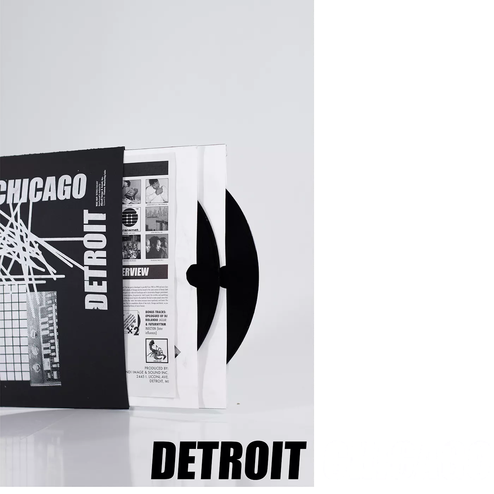
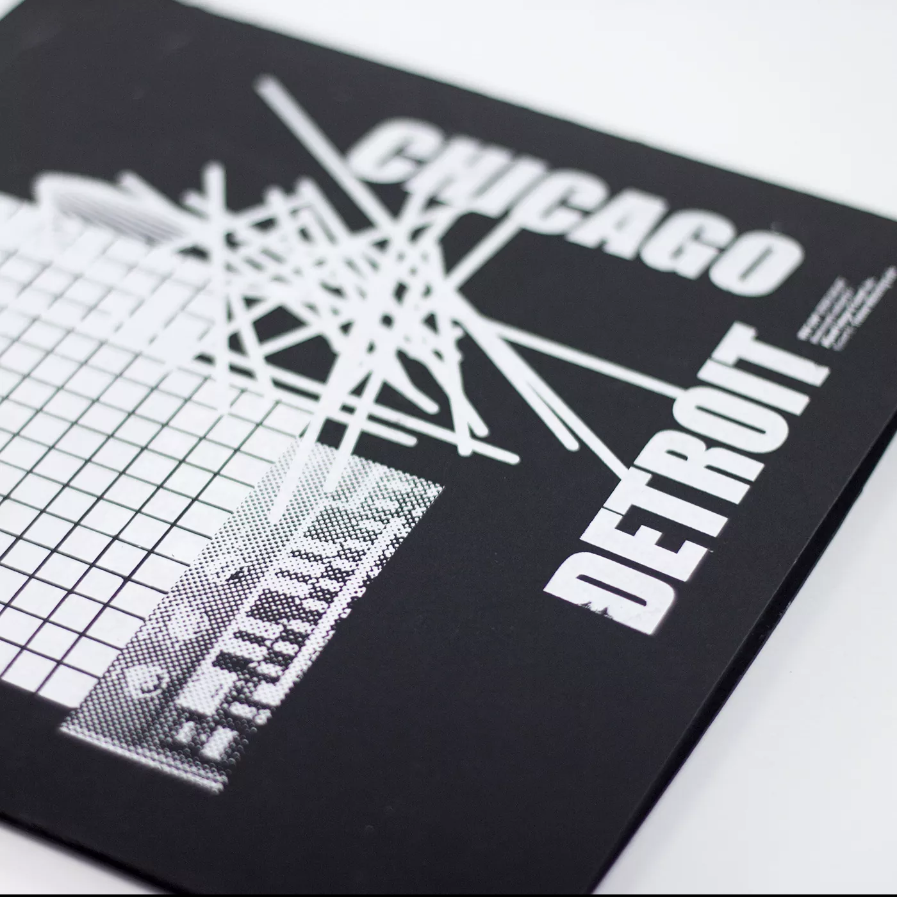
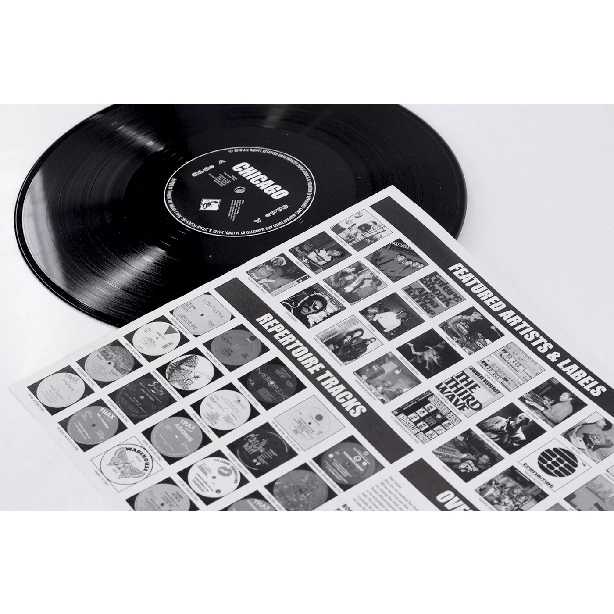
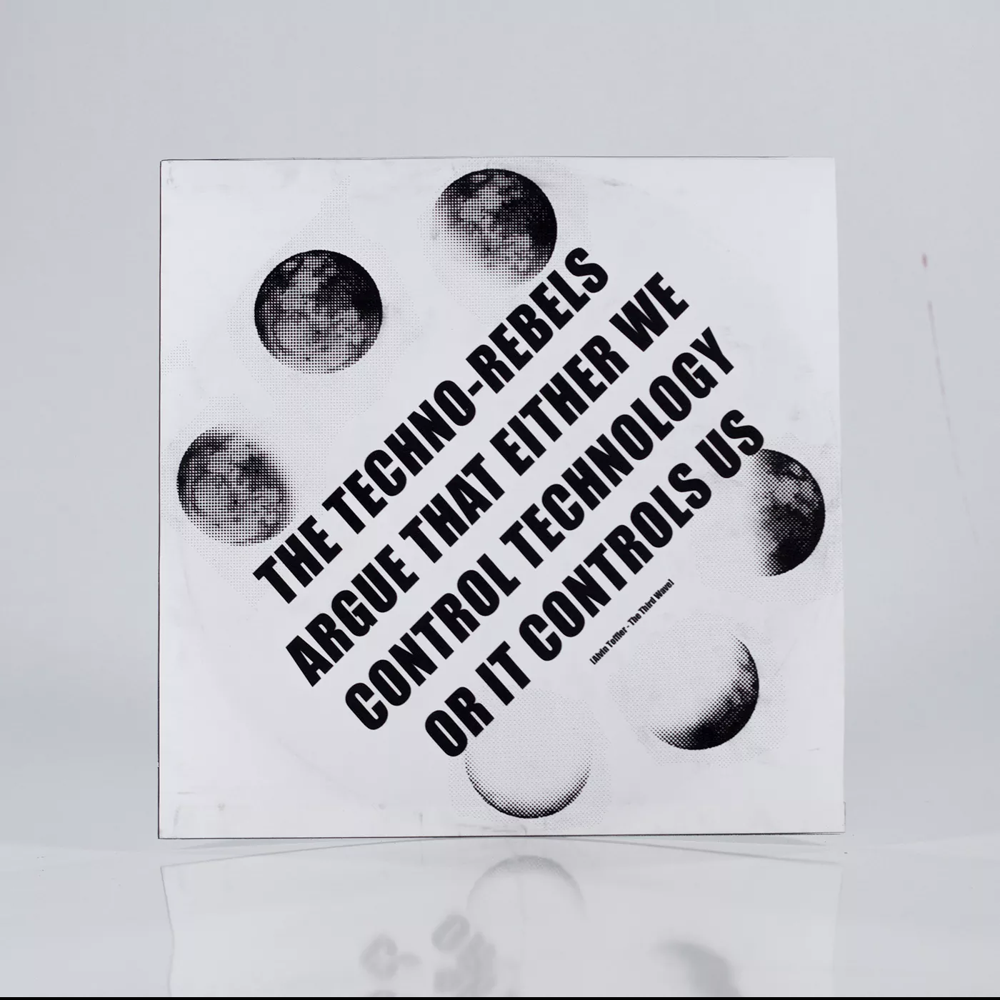
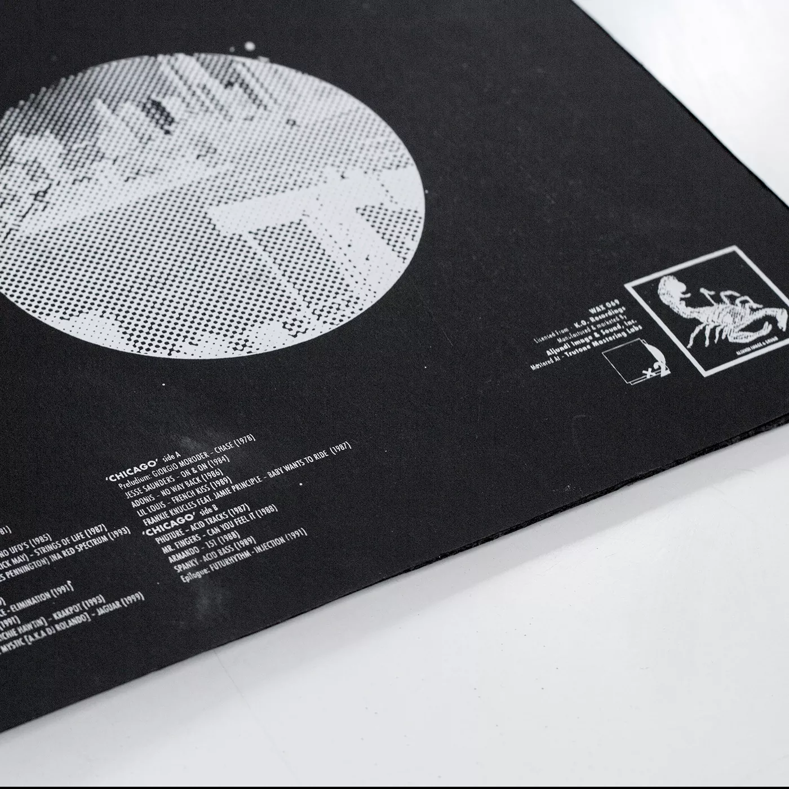
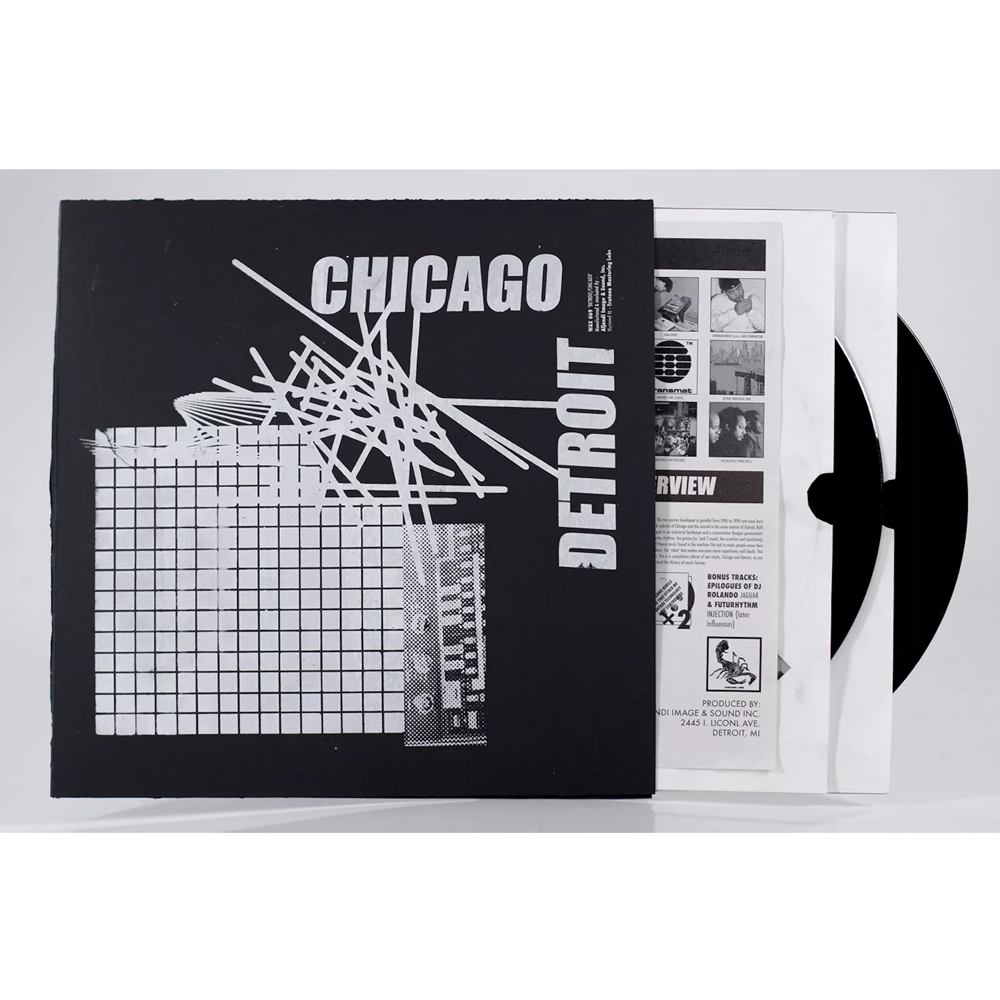
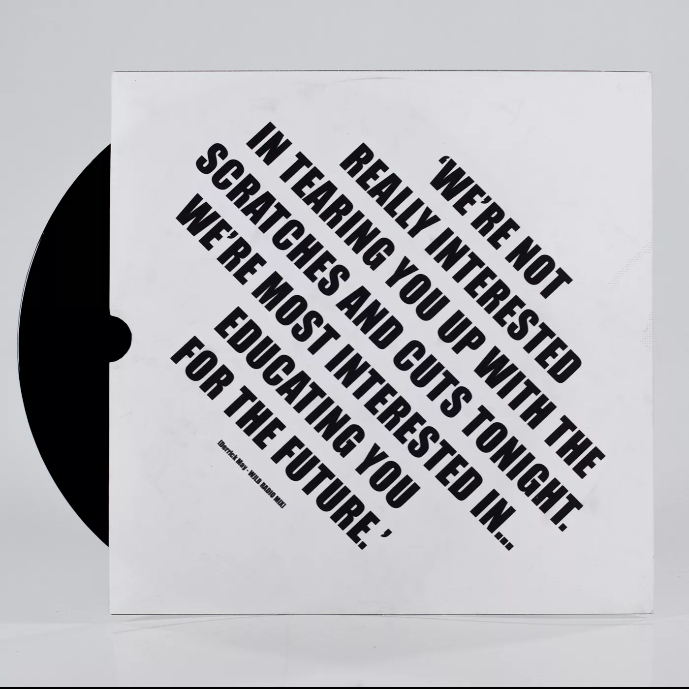
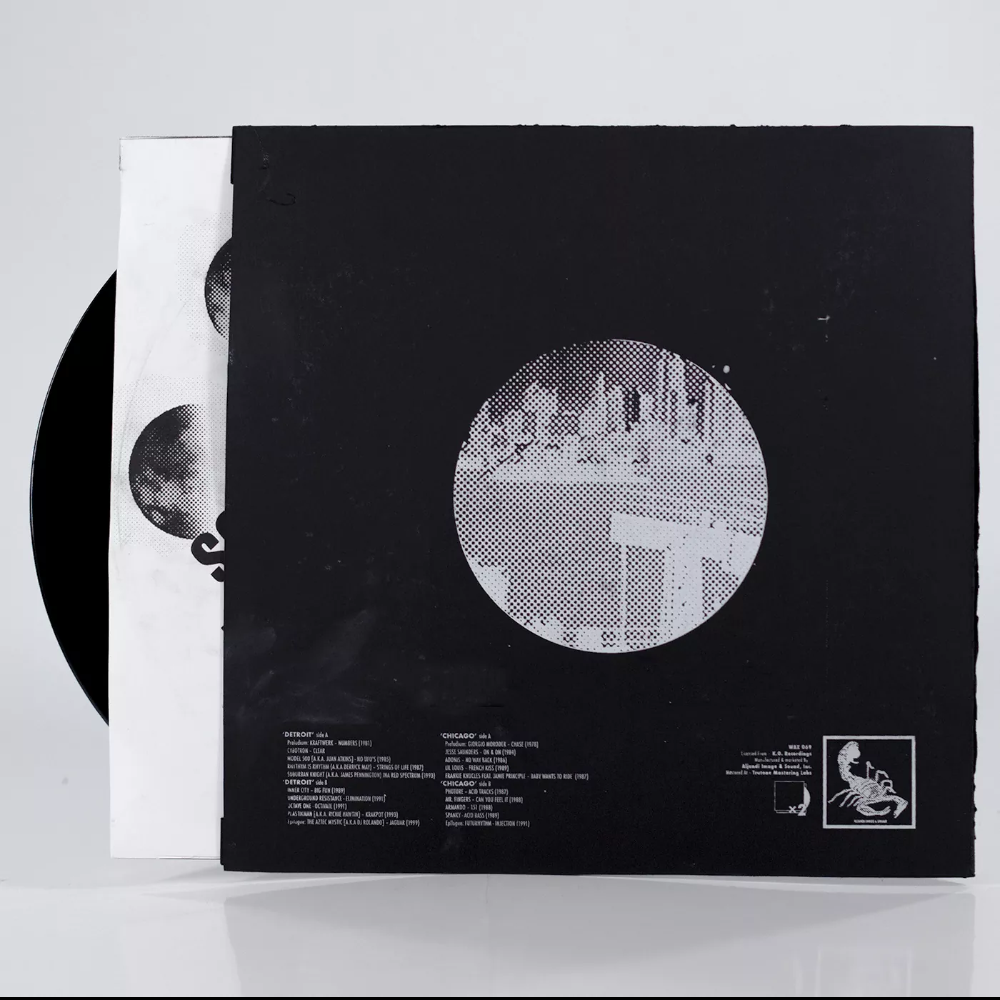
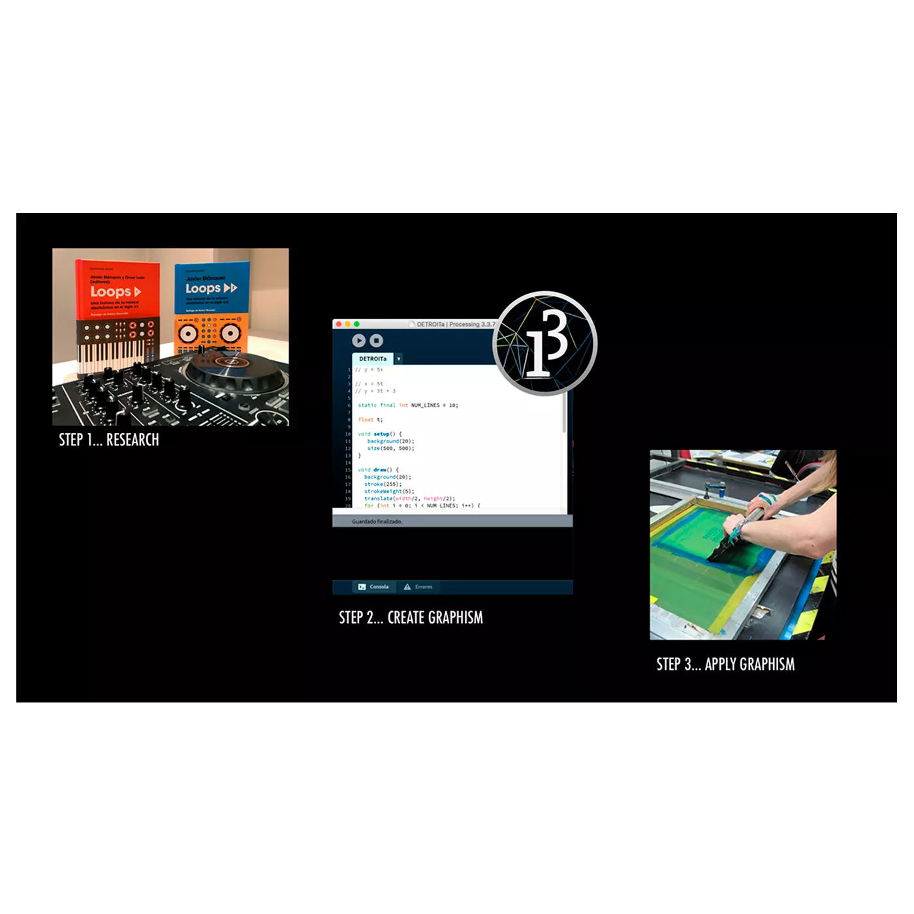

Graphic design · Generative design · Motion
DETROIT · CHICAGO
A visual identity and vinyl edition shaped by electronic music culture.
This project translates a music selection rooted in Detroit and Chicago into a complete visual object. The work combines editorial design, generative graphics, screen printing and motion to create a coherent identity across the vinyl cover, inner sleeve and promotional video.
Role
Art direction, graphic design, generative design, print production and motion.
Tools
Adobe Illustrator, Adobe Photoshop, Processing and After Effects.
Result
A multidisciplinary edition in which sound, print and moving image share the same visual system.








